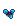
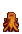

Mystischer Baum
| Mystischer Baum | |
 | |
| Information | |
| Samen | |
| Zapfhahnerzeugnis | |
| Wachstumsdauer | Variable |
Ein Mystischer Baum ist ein Baum, der aus einem Mystischen Baumsamen wächst. Das Herstellungsrezept für den Samen wird verfügbar, sobald die Meisterung des Sammelns erreicht und in der Höhle abgeholt wurde. Der Baum liefert alle 7 Tage Mystischen Sirup, wenn angezapft (alle 3 Tage mit einem Schweren Zahpfhahn). Sie können mit einer Axt gefällt werden, wodurch 7-11 Hartholz plus 1 Hartholz aus dem Baumstumpf entstehen.
Standardmäßig haben Mystische Bäume jede Nacht im Frühling, Sommer oder Herbst eine Wahrscheinlichkeit von 15 %, zur nächsten Stufe zu wachsen. Mit Baum Dünger wächst diese auf 30 %, dies auch im Winter.[1] Das bedeutet, dass ungedüngte Mystische Bäume normalerweise in 26 ± 12 Tagen wachsen, während gedüngte Exemplare regulär in 13 ± 5 Tagen wachsen.
Im Gegensatz zu anderen Bäumen verbreiten Mystische Bäume ihre Samen nicht von selbst. Außerdem lassen sie beim Schütteln oder Fällen keine Samen fallen.
Wachstumszyklus
| Stufe 1 | Stufe 2 | Stufe 3 | Stufe 4 | Stufe 5 | Stumpf |
|---|---|---|---|---|---|
 |
 |
 |
Referenzen
- ↑ Siehe Content\Data\WildTrees.xnb im Spielcode.
Geschichte
- 1.6: Eingeführt.
| Bäume | |
|---|---|
| Bäume | Ahornbaum • Eiche • Kiefer • Mahagonibaum • Palme |
| Obstbäume | Apfelbaum • Aprikosenbaum • Bananenbaum • Granatapfelbaum • Kirschbaum • Mangobaum • Orangenbaum • Pfirsichbaum |
| Samen | Ahornsamen • Eichel • Kiefernzapfen • Mahagoni-Samen • Pilzbaumsamen |
| Früchte | Apfel • Aprikose • Banane • Granatapfel • Kirsche • Mango • Orange • Pfirsich |
| Sonstige | Großer Baumstamm • Großer Baumstumpf • Pilzbaum • Teestrauch |